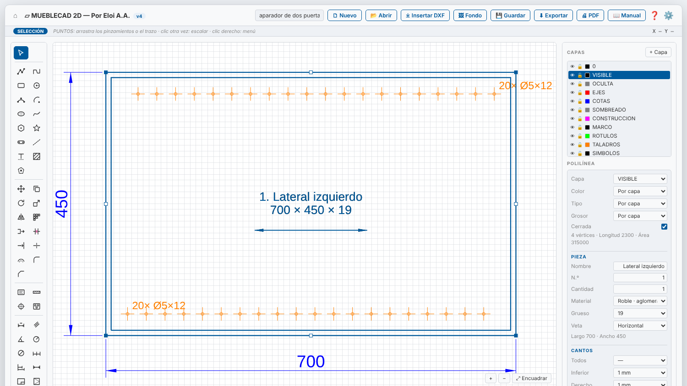
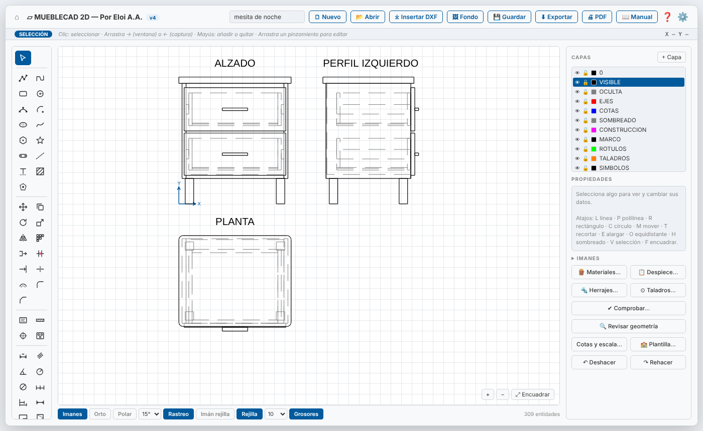
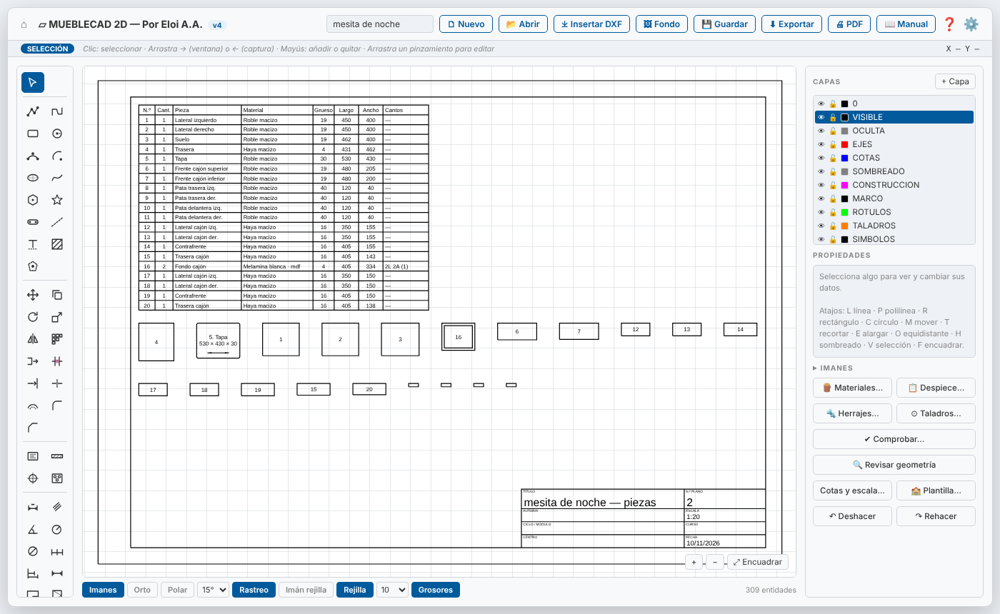
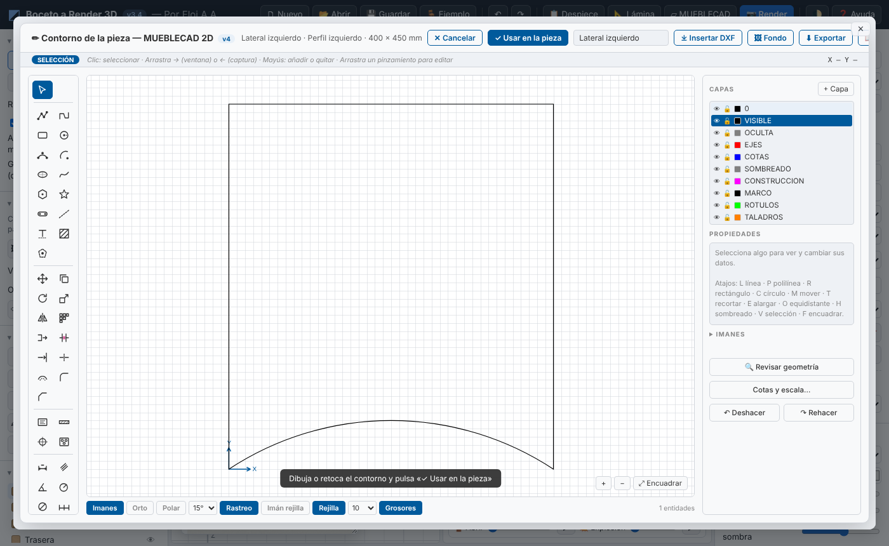

Qué puedes hacer
Dibujar con precisión
- Dibujo con medidas y ayudas de precisión
- Capas, sombreados y contornos
- Booleanas, alinear, repartir y redondear esquinas
- También como programa vectorial
Piezas de tablero
- Cada pieza sabe su material, grueso, veta y cantos
- Materiales y sombreados de taller
- Despiece con m² y metros de canto
- CSV para el Anidador de la CNC
Herrajes y taladros
- Sistema 32, bisagras, Minifix, galletas…
- Tabla de taladros
- Comprobaciones del mueble antes de ir al taller
Cotas y delineación
- Cotas que siguen al dibujo
- Cambia la medida escribiéndola en la cota
- Cortes y detalles
Láminas y archivos
- PDF a escala con cajetín y plantilla del centro
- DXF de ida y vuelta
- Lista de compra y presupuesto
Con Boceto a Render 3D
- El botón «▱ MUEBLECAD» de Boceto a Render 3D manda el mueble aquí
- Llegan las vistas de conjunto y todas las piezas desplegadas
Así se ve



Cómo se trabaja
Dibuja o importa
Empieza un plano nuevo, abre un DXF o trae el mueble desde Boceto a Render 3D.
Define las piezas
Indica material, grueso, veta y cantos de cada tablero.
Añade herrajes
Coloca bisagras, Minifix, sistema 32 y taladros, y comprueba el mueble.
Saca el plano
Acota, monta la lámina y exporta el PDF a escala, el DXF y el despiece.
¿Primero el boceto?
Con Boceto a Render 3D calcas tu dibujo, ves el mueble en 3D con maderas y luces, y lo pasas a MUEBLECAD con un botón.